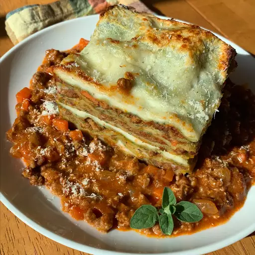

Lasagna Recipe

Description
In this recipe i will show you how you can cook one of my favorite dishes like my grandmother did. It combines some simple ingredience to create something so delicious you will never forget.
Ingredience
- Ground beef
- 2 cans of whole tomatoes
- salt
- pepper
- carrots
- selerie
- oregano
- 500g fresh pasta
- tomato paste
- 4ts Olive oil
Steps
- chop carrots, onions and sellerie in tiny peaces.
- But 2ts Olive oil into a pan and heat it
- Put the vegetable into the hot pan and cook for at least 15 mins. Reduce the heat if needed.
- Slide the vegetables to the side of the pan and frie the ground beef
- Season with salt and peper and add the tomatoes.